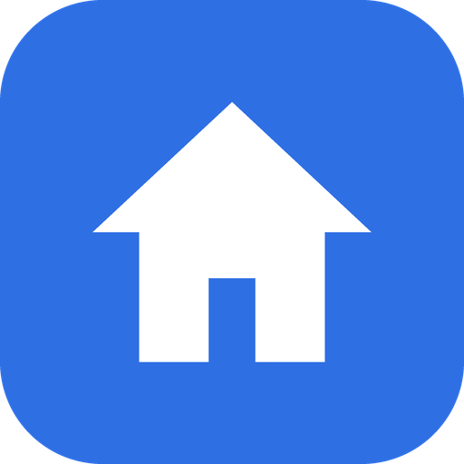
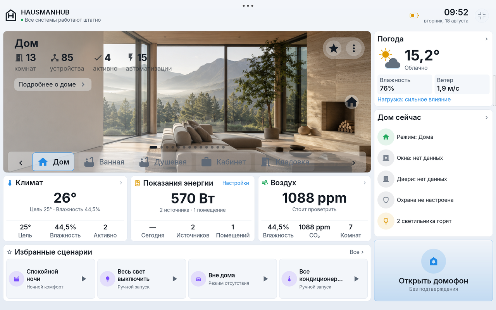
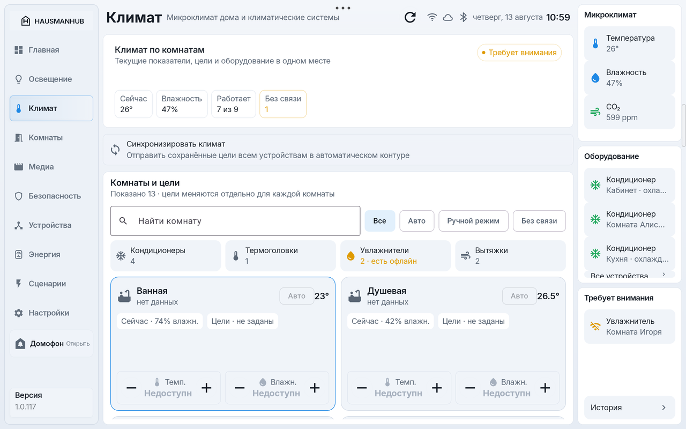
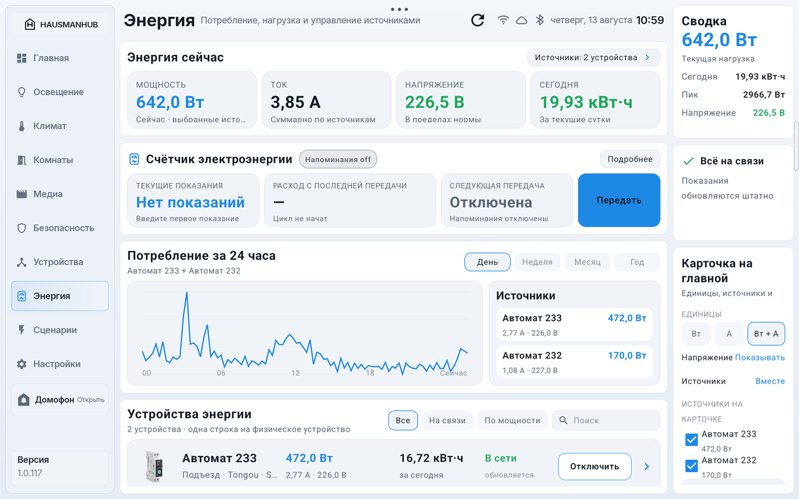
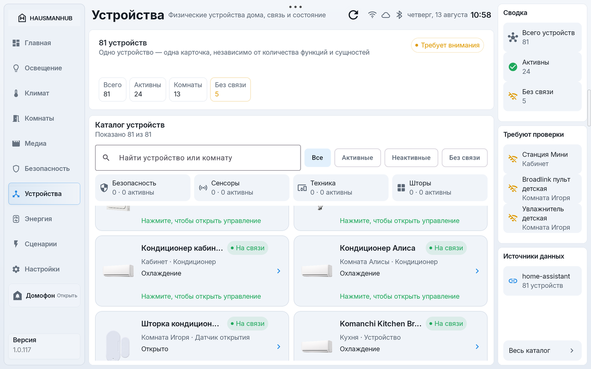

HausmanHub
HausmanHub

HausmanHub - дом,
который понимает
HausmanHub - это планшетная панель управления домом для Home Assistant. Главная, комнаты, климат, освещение, энергия, сценарии, события и безопасность собраны в одном спокойном интерфейсе, который всегда под рукой на стене или на столе.
Все данные дома остаются в вашем Home Assistant. Внешнего облака HausmanHub не существует: панель работает внутри домашней сети и разговаривает только с вашим сервером.
Что умеет HausmanHub
Весь дом на одном экране
Главная собирает состояние дома целиком: погода, комнаты, климат, энергия, качество воздуха, избранные сценарии, ближайшие события и тревоги. Всё важное видно с первого взгляда, без листания меню.
Климат по комнатам
Цели температуры и влажности для каждой комнаты, автоматические и ручные режимы, профили и расписания. Межсезонный режим следит за уличной температурой и реагирует на открытые окна.
Энергия под контролем
Мощность, ток и напряжение по каждому источнику, история потребления за день, неделю, месяц и год, а также показания счётчика с напоминаниями о передаче.
Комнаты и устройства
Каталог всех устройств дома по комнатам: свет, шторы, медиа, техника, датчики. Видно, что на связи, а что отвалилось, и управление открывается одним касанием.
Сценарии и безопасность
Любимые сценарии запускаются прямо с главной. Тревоги о протечках, дыме и газе показываются отдельными карточками, состояние окон и дверей всегда на виду.
Локально и прозрачно
Панель не передаёт данные разработчику или третьим лицам, в ней нет рекламы, аналитики и трекеров. Токены хранятся в защищённом хранилище планшета. Подробности - в Политике конфиденциальности.
Скриншоты

Главная: весь дом с первого взгляда

Климат по комнатам с целями и режимами

Энергия: нагрузка, история и счётчик

Каталог устройств с состоянием связи
Загрузка
Приложение HausmanHub пока распространяется в закрытом тестировании и не опубликовано в магазинах. Открытая часть проекта - интеграция Hausman for Home Assistant, которая устанавливается через HACS и отдаёт панели модель дома, климат и команды.
Поддержка
Вопросы, идеи и сообщения о проблемах принимаются в разделе Issues репозитория hausmanhub_hacs на GitHub.
Совет: журнал диагностики из приложения можно отправить через системное меню «Поделиться». Адреса и идентификаторы устройств в нём маскируются автоматически.